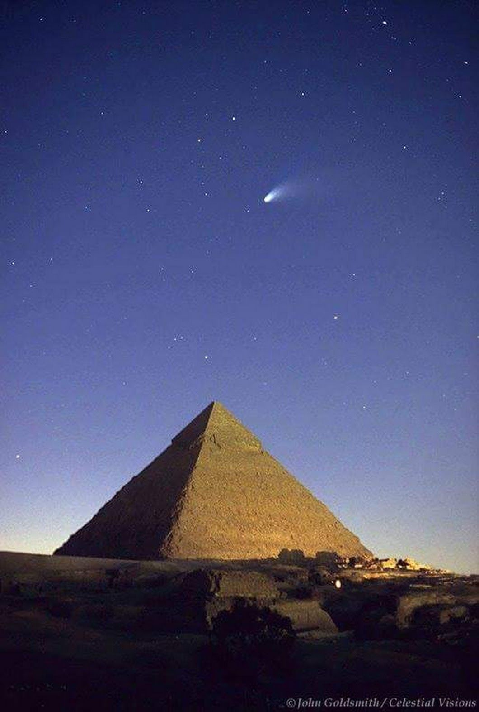

Asteroides Cercanos a la Tierra (NEAs)

Cada vez que salimos al exterior en medio de la noche y levantamos nuestra vista, podemos ver diminutos
fulgores
en la bóveda celeste. Unas veces veremos luces de color blanco, otras veces los veremos con tonos rojizos o
azulados.
También podemos ver luces de un tamañor mayor que otras y con distintas intensidades. Todo esto lo podemos
apreciar de una
manera muy sencilla, solo basta salir al exterior, y con un poco más de observación, tiempo y determinación,
seremos
capaces de apreciar más detalles del cielo nocturno. Afortunadamente, la raza humana vive en la denominada
"Era de la información"
que le permite, con suma fácilidad, encontrar respuestas a sus preguntas, y en particular, cuestiones sobre
el cielo nocturno.
Si bien es cierto, que es muy sencillo encontrar respuestas sobre el Universo en pleno siglo XXI y con la
seguridad de que estas respuestas
son correctas, esto no siempre fue así. Hubo un tiempo donde nadie sabía lo que ocurría en la bóveda
celeste; hubo un tiempo donde la superstición,
lo fántastico, lo mágico y el mito convivían todos los días con el ser humano. Por ejemplo, en el Antiguo
Egipto se creía que los cometas eran
mensajes de los dioses que podían anunciar abundancia, prosperidad, fertilidad, entre otros; o por el
contario, escasez, invasiones,
hambre, entre otros. Otro ejemplo de esto se puede apreciar en el año 1066. En dicho año un cometa pasó
cerca de la Tierra, pronosticando el inicio
de la monarquía británica en la Batalla de Hestings. Después de esto, los cometas eran asociados con
tragedias.

Todas estas explicaciones fantásticas tardaron varios años en perder popularidad, ya que romper paradigmas,
cambiar la cosmovisión dominante
suele ser un proceso bastante largo y muy polémico. No obstante, la Naturaleza tiene la última repuesta y la
ciencia es la mejor herramienta
para entenderla, casi nunca es fácil pero la humanidad ha mostrado que tiene el potencial para descifrarla.
Genios del pasado, que trabajaron
muy duro, consiguieron condensar todo ese conocimiento y hacerlo asimilable a cualquier persona en cualquier
idioma. Solo basta un teléfono
celular con conexión a internet para encontrar respuestas a tus preguntas.
En esta sección, aprenderemos un tema muy interesante sobre los asteroides: su taxonomía.
Desde que Galileo Galilei a principios del siglo XVII utilizó el telescopio para obsevar el Universo, se
percató de que el Universo tenía
más detalles que no eran visibles a simple vista. Esta es la primera vez que se observó el Universo de una
manera distinta, por primera vez
el Universo se visualizaba con "nuevos ojos". Los descubrimientos posteriores que se consiguieron al
observar el Universo con telescopios cada vez
más sofisticados abrieron la posibilidad de estudiar el Universo con mayor detalle, a la vez que revelaban
objetos que a simple vista no se pueden
observar a ojo desnudo. Tal es el caso de los asteroides.
Los asteroides son cuerpos celestes que orbitan alrededor del Sol y que no poseen atmósfera detectable,
compuestos principalmente por materiales rocosos
o metálicos. En la actualidad hay catalogados unos 400.000 y se diferencian en tamaño, masa, período de
rotación, forma y composición superficial.
Estas propiedades se pueden determinar por medio de técnicas astrométricas, fotométricas y espectroscópicas.
En este apartado, se estudiará
la clasificación de los asteroides por taxonomía.
Para estudiar los asteroides, es claro que no resulta práctico enviar sondas o naves hasta el asteroide. Eso
sería muy costoso y requeriría
mucho combustible y tiempo. Eso es ver unos años al futuro. La mejor manera de estudiar (o al menos, una
aproximación) algo que está bastante lejos,
es mediante la información disponible que se tenga a la mano. Entonces surgen las siguientes preguntas:
¿Cómo podemos estudiar los asteroides de
manera eficiente y práctica? ¿Qué información tenemos sobre ellos? ¿Esta información disponible es
suficiente para estudiarlos? ¿Vale la pena
estudiar los asteroides? ¿De qué me sirve estudiarlos? ¿Qué puedo ganar si los estudio? Al intentar
responder estas preguntas, es necessario
recordar que el desarrollo de la ciencia está estrechamente ligado al desarrollo de la tecnología, lo que
está vinculado con el avance de la sociedad;
y que todo conocimiento en una sociedad conectada afecta a sus miembros directa o indirectamente y en mayor
o menor medida.
Debido a que no es práctico ir hasta el asteroide para estudiarlo, se recurre al uso de la información que
podemos obtener de él, y esa información
proviene de la luz. Estos cuerpos menores no son apreciables a simple vista. Por esto, se usan telesoopios
para detectarlos y mediante
programas computarizados se realizan análisis fotométricos y espectroscópicos. En esta sección, se estudiará
el análisis espectroscópico
para estudiar los espectros de reflexión de los asteroides, para determinar su composición superficial.
La caracterización de la composición de la superficie de un asteroide se basa en el análisis de sus
propiedades para determinar
la presencia de elementos o compuestos químicos en forma de minerales. Los minerales presentes se analizan
en el laboratorio empleando
espectros de transmisión y reflexión, simulando diferentes ángulos de visión y de incidencia, variando la
temperatura, el
tamaño de grano, los porcentajes de las fases minerales cuando se trata de mezclas, entre otros.
Los asteroides no emiten luz visible, emiten luz infrarroja por tener una temperatura mayor que el cero
absoluto; sin embargo, sí reflejan la
luz del Sol. Cuando la luz del sol incie sobre la superficie de un asteroide, la radiación electromagnética
se transmite a través de los minerales
cercanos a la superficie que absorben o emiten radiación en ciertas longitudes de onda que son
características de las especies minerales particulares
presentes. Las características del espectro procesado, como la inclinación de la pendiente (normalmente
definida entre 0,7 y 1,5 µm),
la curvatura, las posiciones de las bandas de absorción, los anchos y las profundidades, implican qué
minerales pueden estar presentes en la
superficie del asteroide.
La composición de la superficie medida puede o no ser característica de la composición del asteroide como un
todo, dependiendo de la historia geológica
del asteroide, por ejemplo, si es un cuerpo sólido primitivo, un asteroide de escombros o un asteroide
diferenciado: si es un cuerpo sólido primitivo,
la composición de la superficie será característica del asteroide en su conjunto; si se trata de un cuerpo
diferenciado, la composición superficial
inferida será únicamente característica de la superficie del asteroide, no del interior; si se trata de un
asteroide de pila de escombros,
es poco probable que la composición de la superficie inferida represente todo el asteroide porque un
asteroide de pila de escombros es un agregado de
piezas aplastadas de asteroides que se han fusionado bajo la gravedad, rocas de colisiones de diferentes
asteroides.
Las taxonomías actuales de asteroides se basan en gran medida en la presencia de características principales
en los espectros de reflexión de longitud
de onda de ultravioleta UV a cercano infrarrojo NIR junto con el albedo (la cantidad total de luz reflejada)
y los índices de color fotométricos.
Las características espectrales comunes que separan las clases taxonómicas incluyen absorciones debidas a
los minerales de silicato olivino y piroxeno,
silicatos hidratados como filosilicatos, óxidos como magnetita y espinela, sulfuros como troilita y
oldhamita y otros minerales hidratados.
Los asteroides de metal puro tienen espectros V-NIR casi sin características.
En la NUV (0.1–0.3 μm), algunas características espectrales están asociadas con el carbono, así como con
materiales de silicato que contienen hierro
con diversos grados de meteorización espacial. Las características de NUV pueden distinguir los asteroides
primitivos porque las pendientes de tipo S
parecen permanecer más rojas que las de tipo C en la NUV. En el NIR, la llamada banda de '3 μm' (2–4 μm)
está asociada con agua/hielo, materiales que
contienen agua y la molécula de OH. En particular, la banda alrededor de 3,1–3,2 μm está asociada con
agua/hielo o escarcha de hielo y la banda alrededor
de 2,95 μm está asociada con agua en minerales. Una banda de 2,7 a 2,8 μm está asociada con la molécula de
hidroxilo (OH) en los minerales de filosilicato.
Esta banda suele estar presente cuando está presente la banda de 0,7 µm, pero no al revés. Los filosilicatos
también tienen una banda mínima en el MIR de
alrededor de 12 μm, cuya posición exacta puede indicar el grado de alteración acuosa. Otras características
espectrales en el NIR (1–5 μm) están asociadas
con carbonatos, compuestos orgánicos y minerales amoniacales.
El sistema taxonómico más actual de clasificación de asteroides en 2019 es el sistema Bus-DeMeo publicado en
2009 que cubre el rango de longitud de onda
de 0,45 a 2,45 μm que proporciona un sistema de clasificación de asteroides basado en proporciones
mineralógicas.
A continuación se presenta una actividad interactiva, práctica y ejemplificadora de la taxonomía de los asteroides
o su tipo espectral. Se presentarán espectros de reflexión de alunos asteroides y deberá escoger entre las respuestas
aquella más apropiada de acuerdo a la información proporcionada.
Las imágenes de los espectros de reflexión fueron obtenidos de artículos de investigación. Los links a éstos son los siguientes:
Pieters , C. & Binzel, Richard & Bogard, Donald & Hiroi, Takahiro & Mittlefehldt, David & Nyquist, L. & S., Rivkin & Takeda , H. . (2005). Asteroid-Meteorite Links: The Vesta Conundrum(s). Proceedings of the International Astronomical Union. 1. 273 - 288. 10.1017/S1743921305006794.
,
Takir, Driss & Kareta, Theodore & Emery, Joshua & Hanuš, Josef & Reddy, Vishnu & Howell, Ellen & Rivkin, Andrew & Arai, Tomoko. (2020). Near-infrared observations of active asteroid (3200) Phaethon reveal no evidence for hydration. Nature Communications. 11. 2050. 10.1038/s41467-020-15637-7 .
2022 - Página diseñada y desarrollada por el grupo de trabajo BUAP-INAOE del programa: Asteroides Cercanos a la Tierra (NEAs)